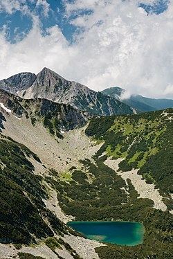
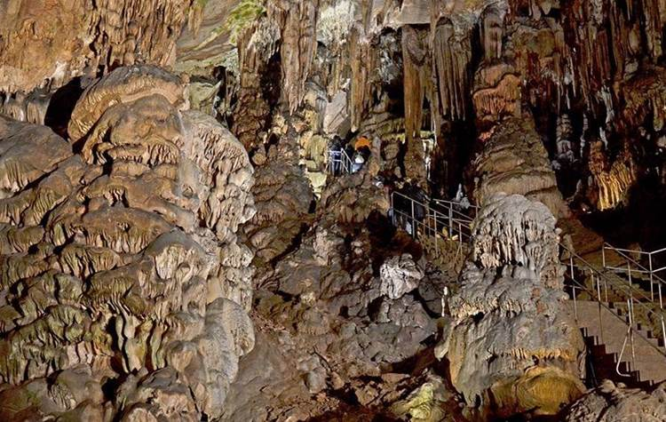

Планини
България се слави с прекрасни планини, всяка от тях величествена!
| Стара Планина |
|||
 |
Стара планина е най дългия планински масив на Балканския полуостров.
По-голямата ѝ част се намира на територията на България, разположена по дължината на страната, като условно я разделя на
Северна и Южна България. Най-високата ѝ точка е връх Ботев (2375,9 m). В нейното землище са обособени много природни паркове,
защитени местности и един национален парк. Тя е сред най-големите центрове на ендемични и реликтни видове. В нея са изградени 81 хижи.
Поради изградената материална база, чистия въздух и високопланински характер Стара планина често е предпочитана цел за туризъм и отдих.
В нея се намират едни от най-великите забележителности в България: Крепоста Царевец, Водопада Райското пръскало, Пещерата Бачо Киро,
Тетевен, Етъра, Дряново, Шипка, както и най-високия водопад на Балканите-Скакля. |
||
| Витоша |
|||
| Преди много години Витоша е била вулканична планина, днес тя е един от най-големите
природни паркове в страната. Най-високата ѝ точка е Черни връх (2290 м.). Така тя се нарежда на четвърто място по височина в България.
Във Витоша се намират над 40 хижи: Момина скала, Алеко, Кумата, Планинец, Камен дел, Офелиите, Еделвайс, Малинка, Звездица и
много други. Във Витоша има голям брой малки водни източници, но единствената голяма река, която извира от планината,
е река Струма, която тече на юг, преминава през България и Гърция и се влива в Бяло/Егейско море.
Другите, по-малки реки, образуващи сравнително дълбоки долини са Палакария, Железнишка, Бистрица, Драгалевска, Боянска, Владайска,
Матница и др. Всички те, с изключение на Матница, принадлежат към басейна на река Искър.
На територията на Витоша има и 6 подземни реки, в галериите на пещера Духлата, край село Боснек. |
 |
||
| Рило-родопския масив |
|||
|  | Рило-Родопският масив носи името си на планината Родопи, която е разположена на
територията на Южна България и Северна Гърция. В масива се намира най-високият връх на Балканите - Мусала (2925 м).
Към Рило-Родопския масив се числят западните погранични планини (от Осогово до Беласица), известни под името
Осоговско-Беласишката планинска група, високите Рила и Пирин и просторните Родопи, както и планините Славянка и Стъргач.
В западна посока масивът продължават на територията на Северна Македония, Косово и Сърбия. На югозапад обема планините от
двете страни по поречието на Вардар, включително Пелагонийския масив с планината Якубица и т.н. В Сърбия планините от двете страни
на река Морава също са част от Рило-Родопския масив. Те са по-ниски и изградени от мезозойски и терциерни седименти. |
||
| Странджа и Сакар |
|||
| Странджае разположена в източната част на област Тракия.
На север се простира до Бургаската низина, на североизток и изток до Черно море, на югозапад до Източнотракийската равнина.
На северозапад се свързва с Бакаджиците и Дервентските възвишения.
Дължината ѝ от северозапад на югоизток е около 125 km, а ширината ѝ достига до 65 km. Общата площ на планината е около 10 000 km². Сакар се простира от северозапад на югоизток на протежение от 75 km, а ширината ѝ в средата достига до 35 km. Разположена е между долината на река Марица на югозапад и долината на река Сазлийка на запад. На изток Сремският пролом на река Тунджа я отделя от Дервентските възвишения, а на югоизток в Европейска Турция крайните ѝ ниски ридове достигат почти до град Одрин. На север се простира до долините на реките Соколица и Синаповска, а в района на село Орлов дол, чрез много ниска седловина се свързва с Манастирските възвишения. |
|||
Пещери |
|||
| Деветашката пещера |
|||
| Деветашката пещера, намираща се близо до село Деветаки, община Ловеч, е сред най-големите пещери в
България. Разположена е на около 7 km от Летница и на 15 km североизточно от Ловеч, близо до село Деветаки, на източния бряг на река
Осъм. Достъпът до пещерата е по пътека, дълга над километър, която започва малко след отбивката от пътя Ловеч – гр. Левски за
село Деветаки в източна посока, но при влажно време е затруднен. След моста има оформен импровизиран паркинг в тревата.
Алтернативен път (по-подходящ за малки деца и възрастни хора, тъй като не е стръмен) води до паркинг на около 50 m от пещерата –
пътят към него е малко след отбивката за село Деветаки (посока Ловеч – Левски). |
|||
| пещера Магурата |
|||
| Намира се на южния склон на карстовия рид Рабишка могила, Западен Предбалкан.
Разположена е на около 18 km северозападно от град Белоградчик и на около 1,5 km северозападно от село Рабиша.
Образувана е от карстови процеси в дебелослойни долнокредитни сивобели варовици. Тя е една от най-големите български пещери.
Изходът ѝ се нарича Вратача. Някои зали имат колосални размери. Отделни зали са Триумфална зала, Полето, Хармана, Прилепна галерия,
Стрелбището, Галерията с рисунките, Зловеща галерия, Слънчева зала, Зала на сталактоните, Зала на падналия бор, Зала на тополата,
Тронна зала. Всички зали са свързани чрез галерии и пещерни тунели, има много сталактити, сталагмити и сталактони, а в Триумфална
зала има малко езеро. В Магурата има постоянна температура от 12 °C. Общата дължина на галериите ѝ е 2500 m. |
|||
| пещера Ледениката |
|||
|  | Пещерата Леденика е разположена на 16 км от град Враца, на територията на Природен парк
„Врачански Балкан“. Намира се на 840 м надморска височина в Стрешерския дял на Врачанската планина, в местността Леденишки увал.
Образувана е в малмски варовици (капротино-орбитолински варовици – долна креда) през кватернера, когато са се образували повечето
български пещери. Пещерата е била известна още по времето на османското владичество. Овчарите са я използвали,
за да съхраняват вътре овчето мляко. Посетена е и картирана най-напред от Ненко Радев през 1922, 1923, 1924 и 1925 г.
Районът около пещерата е бил собственост на Хр. Чомаков, който през 1927 г. дарява 100 декара ливади и гори на туристическото
дружество „Веслец“, Враца. По-късно пещерата е благоустроена и през 1961 г. отворена за посещения. |
||
Красотата на България